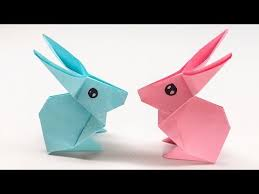

MY ORIGAMI DESIGNS
About Me
Follow Us
Origami Rabbit

- Rabbits are small mammals in the family Leporidae of the order Lagomorpha
- rabbits are also kept as pets
- to know more ... click on the picture above
Jumping Frog

-
A frog is any member of a diverse and largely carnivorous group of short-bodied, tailless amphibians composing the order Anura
-
a frog can be found in damp and wet areas , as it composes of their habitat
- to know more ... click on the picture above